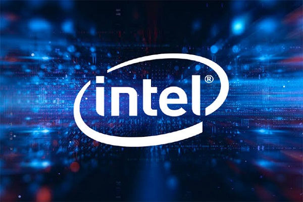

|  | Intel Corporation is an American multinational corporation and technology company headquartered in Santa Clara, California, in Silicon Valley. It is the world's largest semiconductor chip manufacturer by revenue,[3][4] and is the developer of the x86 series of microprocessors, the processors found in most personal computers (PCs). Incorporated in Delaware,[5] Intel ranked No. 45 in the 2020 Fortune 500 list of the largest United States corporations by total revenue. |
 | Advanced Micro Devices, Inc. (AMD) is an American multinational semiconductor company based in Santa Clara, California, that develops computer processors and related technologies for business and consumer markets. While it initially manufactured its own processors, the company later outsourced its manufacturing, a practice known as going fabless, after GlobalFoundries was spun off in 2009. AMD's main products include microprocessors, motherboard chipsets, embedded processors and graphics processors for servers, workstations, personal computers and embedded system applications. |